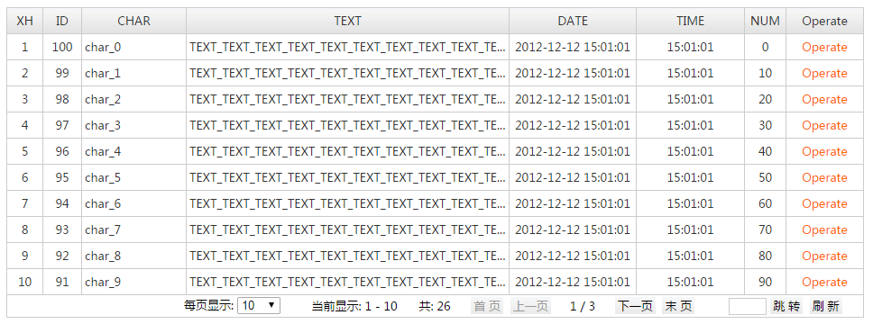

jQuery.bsgrid
支持json、xml数据格式，皮肤丰富并且容易定制，支持表格编辑、本地数据、导出参数构建等实用便捷的功能，容易扩展，更拥有丰富的示例以及问题反馈的及时响应。
| 协议：Apache Licence 2 | 依赖：jQuery 1.4.4 ~~ jQuery 1.12.2 | 支持：IE6+、Chrome、Firefox等 |
| QQ群交流：254754154 | 捐助：支持长远发展，感谢您的认可！ | |
插件特点
1. 简单、轻量，基于jQuery及HTML Table，简单的表格只需数十行代码，支持大数据量表格；2. 内置多套经典皮肤，且非常容易定制，字体定制只需要修改两处CSS代码即可；
3. 实用便捷的功能：表格编辑、 表底聚合、 不分页、 多行表头、 多字段排序、 本地数据、 处理Userdata、 拖动列宽、 滚动表格数据等；
4. 易与其他插件集成使用，示例展示了集成Layui、 ArtDialog、 jquery.validationEngine、 第三方分页工具条等的使用；
5. 扩展性好，插件有特别好的扩展性，易于对插件本身进行局部甚至较大的修改，易于改变展现样式；插件放开了属性及方法的全局修改权限，所有方法都可在外部进行全局重写，而无需修改插件本身的代码；
6. 模块化JS、CSS代码，可按需加载，代码精致简洁，对于阅读、修改、扩展非常容易。
引用文件
引用文件：builds/merged/bsgrid.all.min.css CSS样式(包含默认皮肤样式)builds/js/lang/grid.zh-CN.min.js JS本地化脚本(builds/js/lang/grid.*.min.js)
builds/merged/bsgrid.all.min.js JS脚本
可选皮肤：builds/css/skins/grid_*.min.css CSS皮肤(需引用于bsgrid.all.min.css之后)
图标资源：builds/images/
其他说明：builds目录下未列出的文件无需引入项目中
入门示例

引用文件：
<link rel="stylesheet" href="../../builds/merged/bsgrid.all.min.css"/>
<script type="text/javascript" src="../../plugins/jquery-1.4.4.min.js"></script>
<script type="text/javascript" src="../../builds/js/lang/grid.zh-CN.min.js"></script>
<script type="text/javascript" src="../../builds/merged/bsgrid.all.min.js"></script>
实现代码：
<table id="searchTable">
<tr>
<th w_index="XH" width="5%;">XH</th>
<th w_index="ID" width="5%;">ID</th>
<th w_index="CHAR" w_align="left" width="15%;">CHAR</th>
<th w_index="TEXT" w_align="left" width="30%;">TEXT</th>
<th w_index="DATE" width="15%;">DATE</th>
<th w_index="TIME" width="15%;">TIME</th>
<th w_index="NUM" width="5%;">NUM</th>
<th w_render="operate" width="10%;">Operate</th>
</tr>
</table>
<script type="text/javascript">
var gridObj;
$(function () {
gridObj = $.fn.bsgrid.init('searchTable', {
url: 'data/json.jsp',
// autoLoad: false,
pageSizeSelect: true,
pageSize: 10
});
});
function operate(record, rowIndex, colIndex, options) {
return '<a href="#" onclick="alert(\'ID=' + gridObj.getRecordIndexValue(record, 'ID') + '\');">Operate</a>';
}
</script>
数据格式参考：simple.json
带参数查询
function doSearch() {
// 提供以下三种带参数方式，可任选其中任意一种
var searchParames = $('#searchForm').serializeArray(); // jQuery推荐方式
// searchParames = 'param1=val1¶m2=val2';
// searchParames = {'param1': 'val1', 'param2': 'val2'};
gridObj.search(searchParames);
}
示例：带参数查询表格